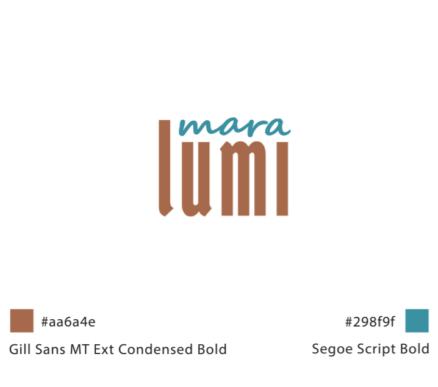
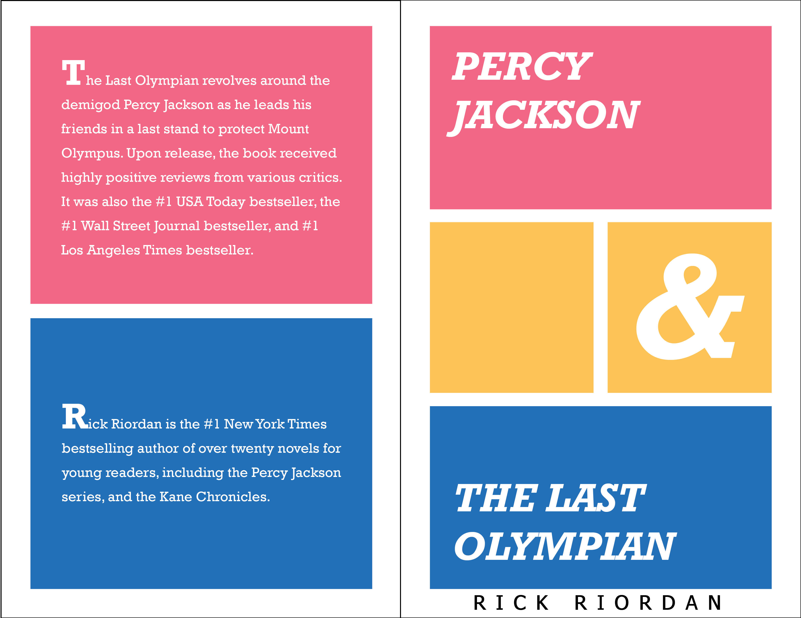
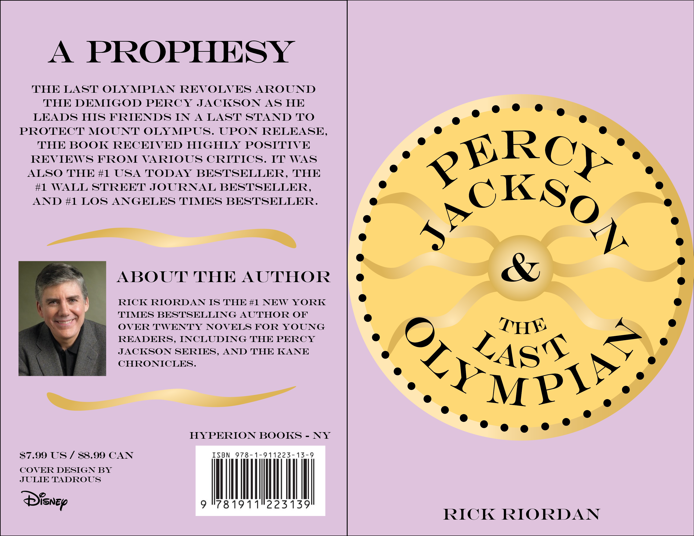
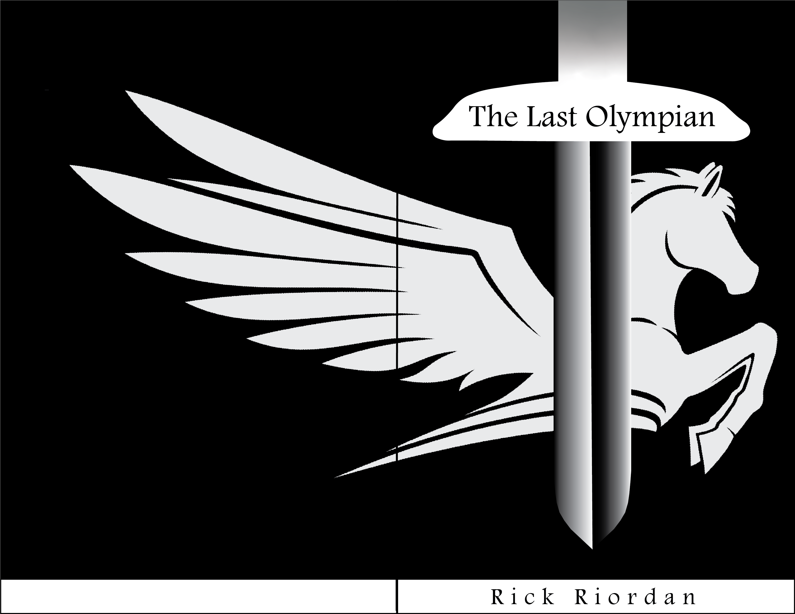

Typography
HER-V211 Typography Course, 2021
A collection of projects and designs from the HER-V211 Typography Course in the Herron School of Art. Each project explores how typography is used as a mode of visual expression within visual communication design. The objective for project 1 was to craft a chosen word into a unique logotype through research and digital tools within Adobe Illustrator. The objective for project 2 was to create a short print publication that uses conventional, long-form typography using Adobe InDesign. The objective for project 3 was to create a unique poster for a type conference by exploring identity and using digital tools within Adobe Illustrator.
Project 1 - Logotypes
Final Maralumi Logotype
→ Process Document ←
Project 2 - Book Spread
Cover Design 1
Cover Design 2
Cover Design 3
→ Final Book Spread ←
Project 3 - Type Conference Poster

Final Poster Design
→ Process Document ←